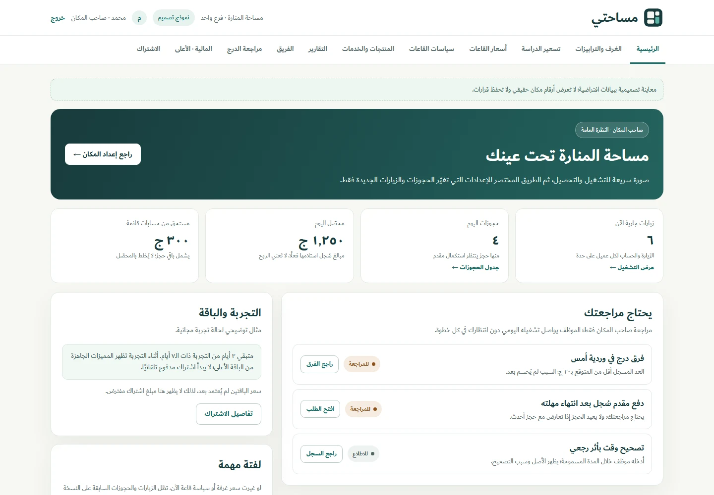

01 / Full-stack productIn development
Masahati
A workspace for the spaces we work in.
A platform for managing study and coworking spaces: rooms, visits, bookings, checkout, and day-to-day operations.
SOFTWARE ENGINEER / FULL-STACK DEVELOPER
BASED IN EGYPT
Hi, I'm Mohamed Ekramy.
The interface you use. The logic behind it.
And the systems that make it work.
PYTHON & JAVASCRIPT

Django templates and HTMX connect each screen to the workflows behind it.
Core interests: Python, React, Django, Flask, SQL, and systems thinking.
01 / THE WORK
Full-stack products, language tools,
and the engineering underneath.
A workspace for the spaces we work in.
A platform for managing study and coworking spaces: rooms, visits, bookings, checkout, and day-to-day operations.
Selected text. Structured analysis.
A Chrome extension that captures selected medical claims from webpages and sends them to a Python analysis API.
A language, from tokens to execution.
A custom-language transpiler and web IDE that makes the compilation pipeline visible, from tokenization to generated Python.
Different paths. Better decisions.
Pathfinding and game-playing projects exploring how search strategies navigate a space and choose a move.
Identity at the heart of the application.
An attendance-application foundation with account management and Identity workflows.
The complete borrowing journey.
A library management application with member and admin roles, catalog search, filtering, and borrowing workflows.
A small disk. A complete set of ideas.
A 1 MB virtual FAT file system in Python, exposed through a 13-command interactive shell.
02 / THE PERSON
I'm Mohamed, a software engineer building full-stack applications with Python and JavaScript.
I build across interfaces, application logic, and databases. My projects also take me into compilers, search algorithms, and file systems: places where understanding what happens underneath really matters.
I'm currently building Masahati, a platform for study and coworking spaces, and looking for opportunities to grow as a full-stack developer.
B.Sc. in Software Engineering
Expected 2027 · CGPA 3.76
Dec 2025 – Jul 2026
Jun 2026 – Jul 2026
03 / THE TOOLBOX
React · JavaScript · HTML · CSS · HTMX
Python · Django · Flask · REST APIs
PostgreSQL · SQLite · SQL · Git · Docker
C# · C++ · Algorithms · Compiler design · File systems
04 / WHAT'S NEXT?
Internships, junior roles,
and interesting collaborations.